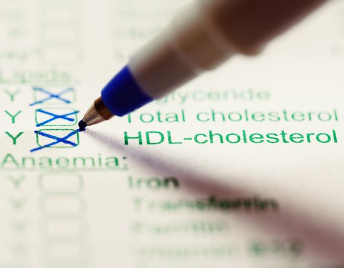
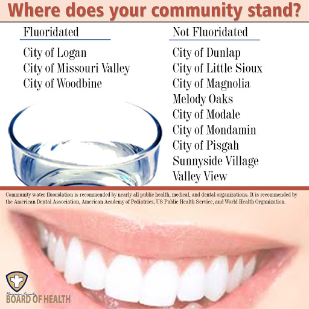

28th January 2021
NEW Journal and Book Club
an introduction to epidemiology for beginners
Summary
Discussion
the study of thedistribution anddeterminants of health-related states or events in specifiedpopulations , and theapplication to the control of health problems
- A Dictionary of Epidemiology, 2008
underlying premise: health status affected by genetic, environmental, behavourial, social factors
1) identify disease etiology (cause) and risk factors (factors increasing a person's risk of disease)
2) determine extent of disease
3) study the disease's natural history and prognosis
4) evaluate existing and new preventative and therapeutic measures and health care delivery
5) developing public policy
Epidemiology provides clues to changes in health problems in communities over time
e.g. 1 change in diseases affecting U.S. from 1900 to 2014:
In 1900, infectious diseases (pneumonia and influenza) leading cause of death
Developing countries became industrialised, leading cause of death similar to developed countries: chronic diseases (heart disease, cancer)
Rise in infectious diseases in developed countries: human immunodeficiency virus (HIV) and tuberculosis increasing
e.g. 2 change in U.S. life expectancy from 1900, 1950, 2014 at birth and age 65:
expectancy increased at birth, due to less child mortality, but not much change in older age, suggest more needs to be done to extend lifespan
Epidemiological evidence used to:
opportunity for early disease detection in new untested populations
opportunity to develop and introduce preventation to change exposures/risk factors
| Type | Description | Example | Rationale |
|---|---|---|---|
| Primary | prevent initial development | immunisation | aim: disease never develops |
| Secondary | detect existing disease | cancer screening | detect early for easier treatment |
| Tertiary | reduce disease impact | stroke rehabilitation | prevent complications with treatment and therapy |

Cholesterol screening for childrenclinical practice is population-based
How does an epidemiologist identify disease cause?
investigate from descriptive data - ensure data is valid before interpreting it
are these differences real? why are there differences?

advert for community fluoride by Harrison County Board of Healthexample: effect of fluoride on tooth decay in two New York communities (1950s)
further example: demonstrate causal relationship between fluoride and low tooth decay
Ignaz Philipp Semmelweis, Hungarian German Physician. In charge of the First Obstetrical Clinic of the General Hospital in Vienna, July 1846. Puerperal (childbed) fever was common.
Pregnant women admitted for childbirth to either the:
staffed by physcians and med students - performed autopsies in the morning on women who'd died from childbed fever.
staffed by midwives - didn't perform autopsies.
Mortality in First Clinic (16%) more than twice as much in the Second Clinic (7%)
Semmelweis observed First Clinic mortality was higher because physicians / students went directly from autopsies to deliveries
Semmelweis suggested physician and student
Suspicions confirmed when friend and colleague Jakob Kolletschka died from infection from accidental puncture of student's knife during an autopsy. Kolletschka's
First Clinic staff to wash hands and brush under fingernails after autopsies and before seeing patients.
In 1848, mortality in the First Clinic dropped from 12.2% to 2.4%, similar to the Second Clinic.
Semmelweis was later replaced by a physican who removed the handwashing policy - First Clinic mortality rates rose -
Edward Jenner, born in 1749, interested in
It was known that
Preventative measures: it became practice to
Problems: some of those infected died from smallpox, infected others, developed other infections
Dairy maids known to develop cowpox, a mild disease. During smallpox outbreaks, dairy maids seemed not to develop smallpox.
Jenner heard a maid say it was because she already had the cowpox.
Jenner had created a better preventative intervention
In 1967, the World Health Organization (WHO) began
In 1980, WHO declared
John Snow, anesthesiologist in the 19th century, when cholera was a major problem in England.
In 1854, 600 people living near the Broad Street pump in London died of cholera
Snow believed cholera was transmitted by contaminated water (which went against the commonly held theory of disease at the time)
Water companies used polluted Thames River water. When one company, the Lambeth Company, moved to a less polluted area, Snow thought mortality rate would decrease.
Snow counted cholera deaths per households and determined the water supplier.
Evidence led to intervention (temporary removal of pump handle), led to prevention of some cases
Snow's conclusion that contaminated water was associated with cholera - based on
e.g. smoking and lung cancer
NB/ both research and developing observation-based public health programs are important
Tempting to link declines to improved treatments or vaccines made available in this time.
How to explain this?
Theoretically - human exposure to organisms involved may have declined, or harmfulness of organism diminished.
Primarily result from improvements in social conditions, safer waters, reduced exposures to pollutants, improved nutrition and santitation -
Lesson - be cautious before attributing medical intervention to declined mortality over time.
This is why epidemiologic studies are essential to assess medical intervention effectiveness, difficult to infer from only population-wide mortality
Treatment of disease includes prevention: of death, complications, impact on people. Therapy involves secondary and tertiary prevention mostly, e.g. disability
Nowadays, drugs used for patients with clear diagnoses of the disease are now being evaluated for use as drugs that can prevent the disease in high-risk patients
e.g. studies: HIV and Alzheimer disease
used in clinical investigations: evaluate new and used therapies and new interventions for disease prevention
ultimate goal: use prevention and treatment to improve control of disease, which will prevent deaths amd improve quality of life
Frequency: monthly?
Presenters: please get in touch if you want to present / suggest a different chapter